ふるさと惣菜バイキング
MAP 1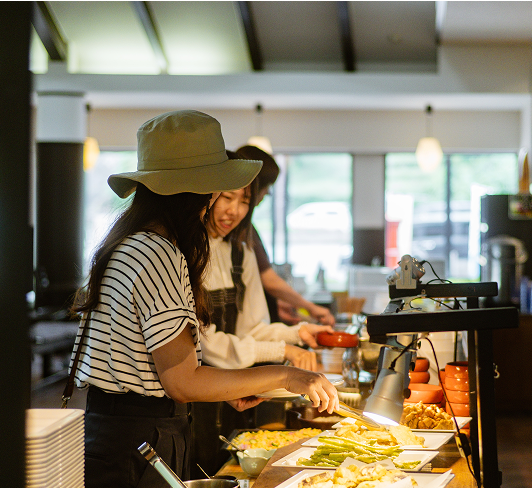
地元の旬の高原野菜をふんだんに使ったどこか懐かしい味わいの惣菜バイキング。布野のおいしさを、心ゆくまで味わえます。
（土日祝のみ営業。）


広島市内から車で約1時間20分
旅の途中に、旅の目的地に。
ここにしかない風景と
旬の味覚に出会う。
ふるさと惣菜
バイキング
11:00〜15:00（土日祝限定）
※平日はランチ食堂のみ
まるごと布野の
アイス屋さん
10:00～16:00（土日祝は17:00まで）
布野ふれあい市場・
三次のお土産屋さん
9:00〜16:00
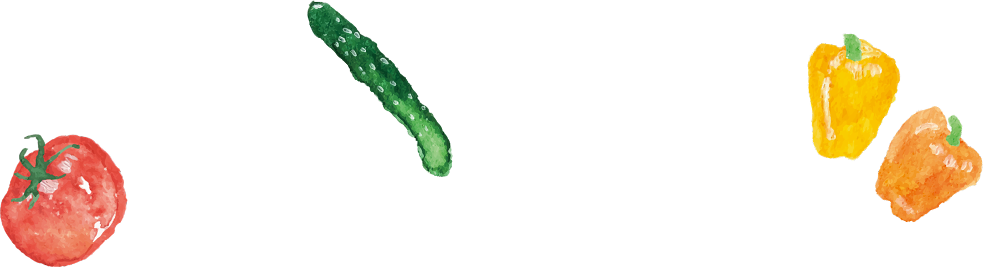
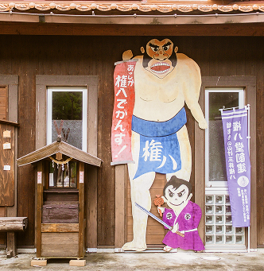

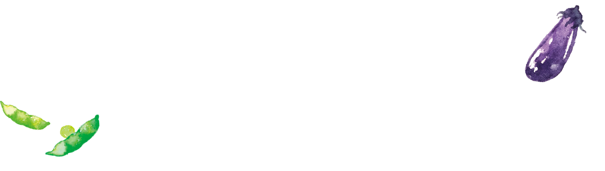
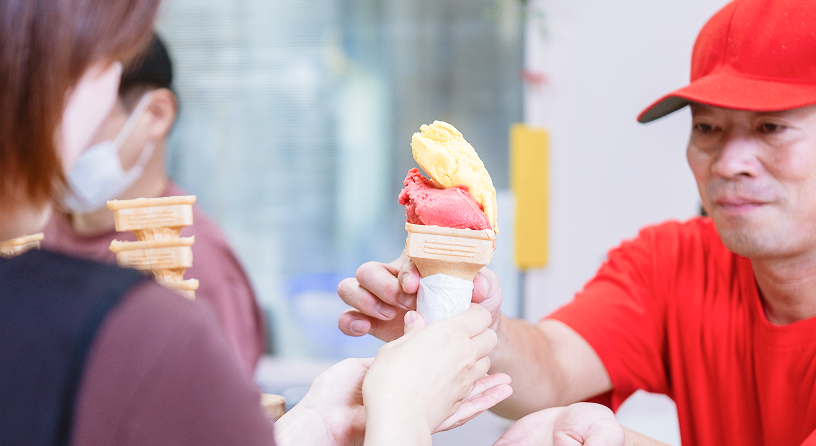

「道の駅ゆめランド布野」は、広島県の北東部、
国道54号沿いにある道の駅です。
山や川に囲まれた場所にあり、広い構内を歩くと、
どこか懐かしい布野村の空気が流れています。
地元食材をふんだんに使ったバイキングやランチ、
野菜や果物のジェラート、自社製造の加工品など、
ここでしか出会えない味をご用意しています。
ドライブやツーリングの途中に、
食べて、買って、休んで、体験する。
五感で四季を感じる。
日本の原風景と四季を感じに、ぜひお立ち寄りください。

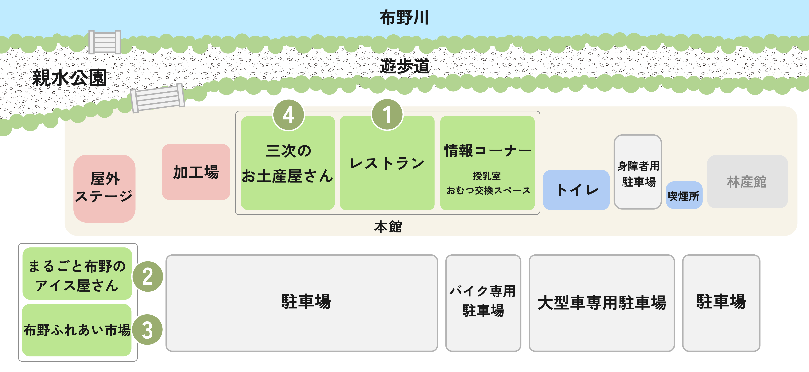

地元の旬の高原野菜をふんだんに使ったどこか懐かしい味わいの惣菜バイキング。布野のおいしさを、心ゆくまで味わえます。
（土日祝のみ営業。）
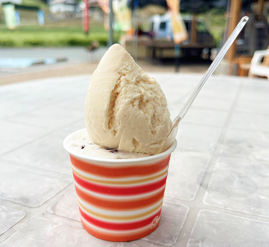
地域で育った牛の生乳や、三次・布野・作木の季節の果物・野菜を使った手づくりアイスクリーム・ジェラートを販売。定番フレーバーに加え、季節限定や変わり種フレーバーもあります。
もっと見る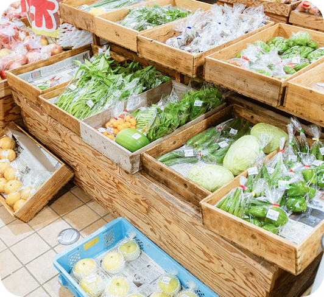
その日に収穫した採れたての季節の野菜・果物に加え、つきたて餅や漬物、地元の醸造品などの加工品や特産品も豊富な市場です。旬の味をお楽しみください!
もっと見る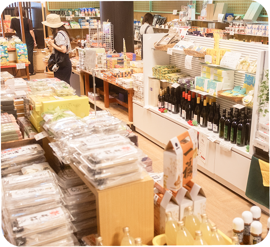
三次や布野の特産品、道の駅オリジナル商品がそろうお土産売り場です。ドライブ途中にうれしい商品も取り揃えており、旅の思い出や贈り物選びにぴったりです。
もっと見る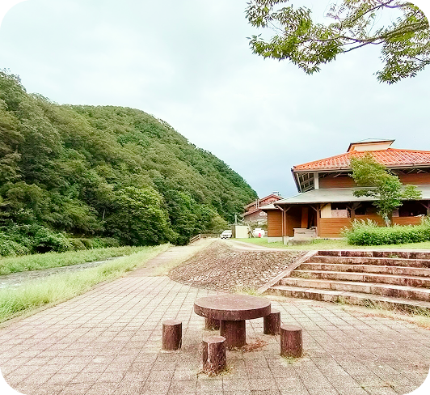
道の駅ゆめランド布野の裏手にある親水公園は、休憩や散策にぴったりの憩いのスペースです。
ベンチや階段に腰掛けてお弁当を食べたり、アイスを片手にゆっくり過ごす方の姿も見られます。
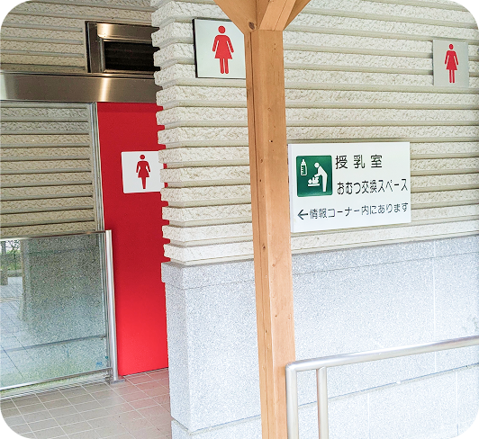
道の駅には清潔で広いトイレが整備されており、24時間利用可能です。
車いす対応のスロープや身障者用トイレの設備もあり、安心してご利用いただけます。
道の駅のすぐ裏には親水公園があり、布野川が流れています。この川は、地元漁協によって定期的にヤマメの放流が行われており、春〜夏の解禁期間中にはヤマメ釣りができます。（釣具はご持参ください。）川沿いは舗装されている箇所が多く、夏場には、水着で川遊びを楽しむ子どもたちの姿も見られます。また、あゆの掴み取りイベントが行われることもあります。
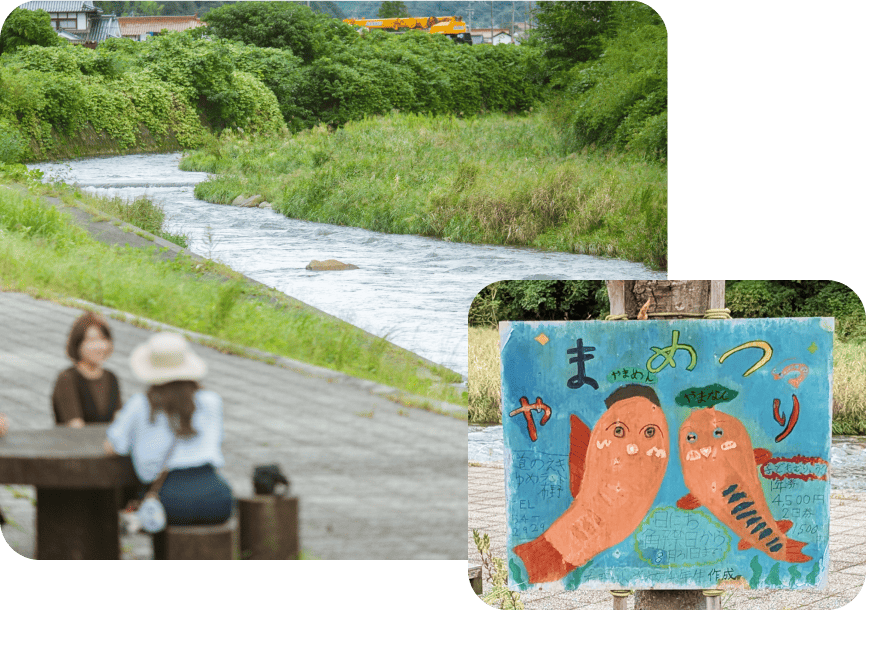
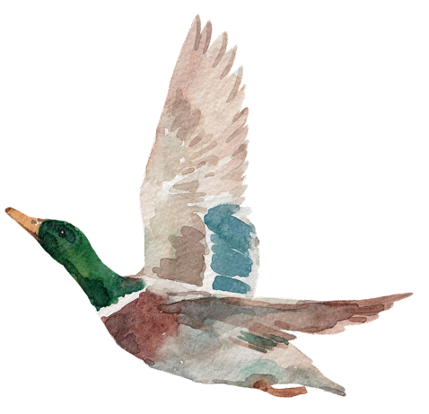
実は、ゆめランド布野は車やバイク好きにも知られる道の駅です。国道54号沿いという立地や広い駐車場を活かし、ツーリングやドライブの立ち寄りスポットとしてだけでなく、キャンピングカーや軽トラ、 スポーツカー、旧車などのイベントが行われてきました。ドライバーやライダー同士が自然と集まり、交流できる場として親しまれています。

施設内の加工場でつきたての餅（もち）を製造しています。 アン餅（よもぎ、白、古代米の餅）、平餅、柏餅など、季節に合わせた種類の餅を早朝からつきたてで仕上げており、出来たてで販売しています。他にも、地元の野菜や果物を利用して新しい商品を製造・販売しています。
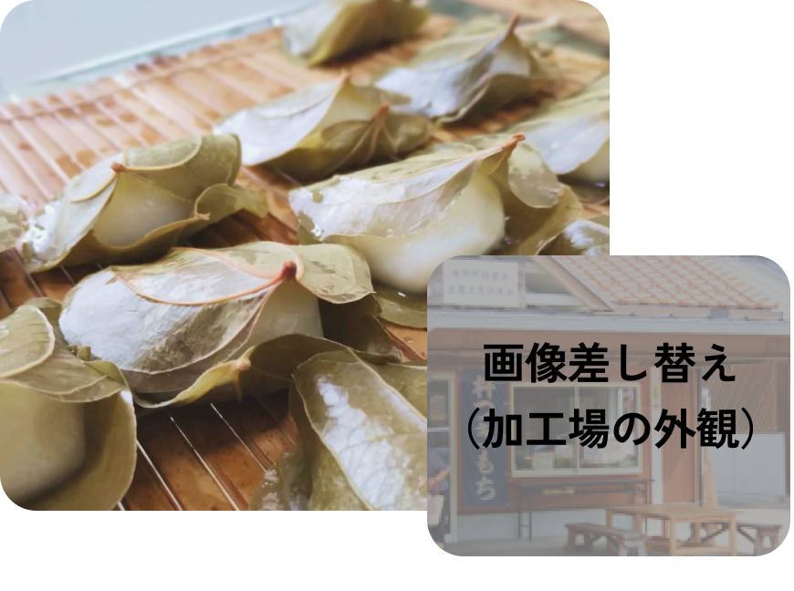
ギターやDJ、フルート、ドラム、トランペットの演奏をはじめ、舞踊やダンス、ブラスバンドなど、さまざまな特技が披露される屋外芝生ステージです。道の駅の敷地内に広がる芝生スペースを活用し、イベントや発表の場として親しまれています。観る人も、演じる人も、自然の中でゆったりと時間を過ごせる、ひらかれたステージです。

道の駅 ゆめランド布野は、広島市内から車で約1時間20分。
週末に少し足をのばして、自然や季節を感じられる、ほどよい距離にあります。駅の裏手には布野川が流れ、山に囲まれたこの場所には、昔から変わらない風景と空気があります。
ここでしか味わえない旬の食と人の温かさを感じながら、ゆっくり過ごしていただける場所でありたい。
ドライブの途中に、目的地として、気軽に立ち寄ってもらえたら嬉しいです。
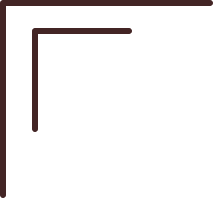
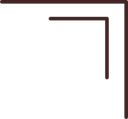
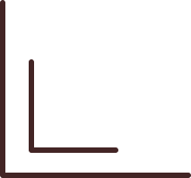
妖怪伝説「稲生物怪録」に登場する、布野町出身の相撲取り・三井権八。
大男として妖怪騒動に立ち会った人物で、道の駅ゆめランド布野には、まわし姿の権八の石像と紹介看板が設置されています。
妖怪文化と地域の民話に触れられる、布野ならではの見どころです。「権八神社」が道の駅のどこかにあるから探してみてね！
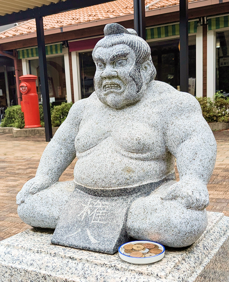
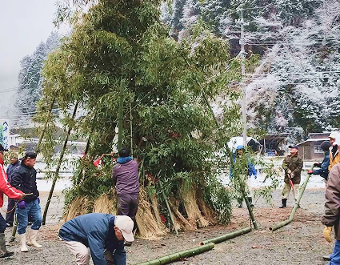
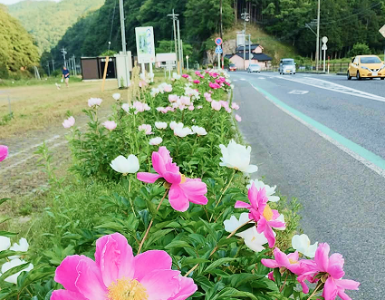
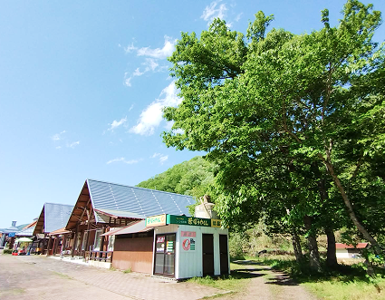
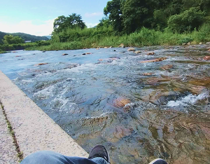
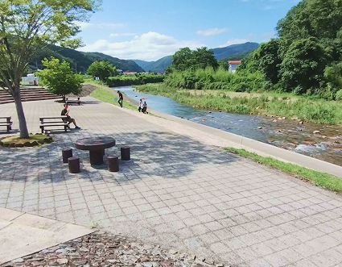
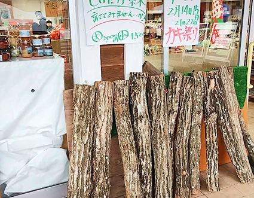